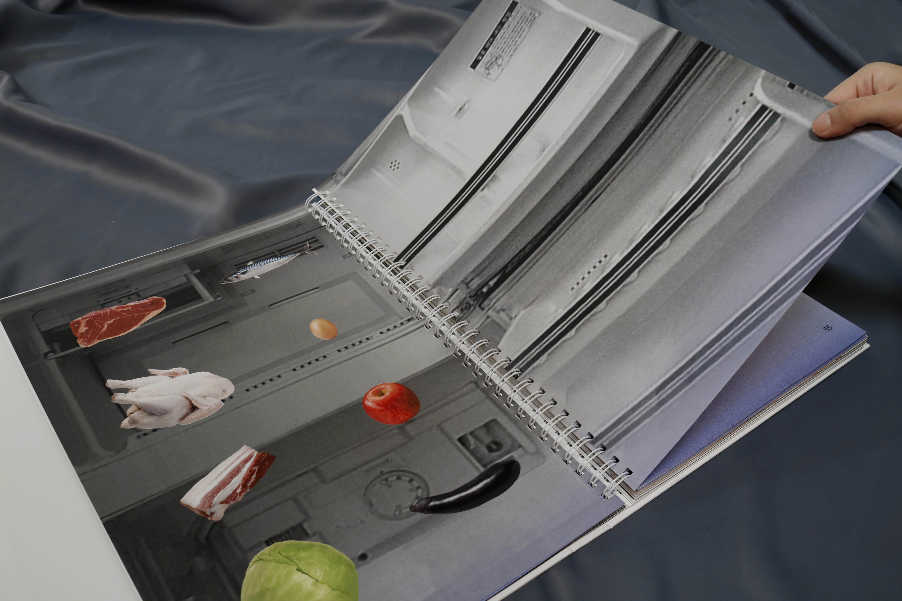

냉장고와 냉장고 1970 - 2010
냉장고 도입 시작 시점부터 현재에 이르기까지 약 50년간 제품과 식생활의 특징을 연도별로
담은 편집물이다. 냉장고의 다양한 크기와 형태, 기능과 구조 등 진화 과정을 보며 냉장고와 식생활은 서로 영향을 끼치며 상관관계 속에서 함께 변화해 왔음을 알 수 있다. 전체적으로 모던한 디자인에 연도별 당시의 느낌이 담긴 그래픽을 넣어 전개했다. 이미지에 적절한 질감 처리와 영상, 지면 등 광고에 쓰인 레터링을 수집하여 냉장고와 함께 배치하였다.
성은정 eunjoemeee@naver.com Instagram@eunjoeme


